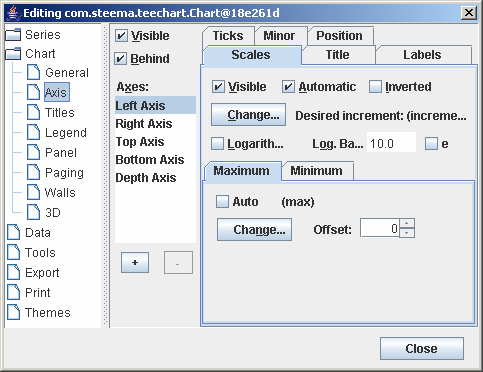
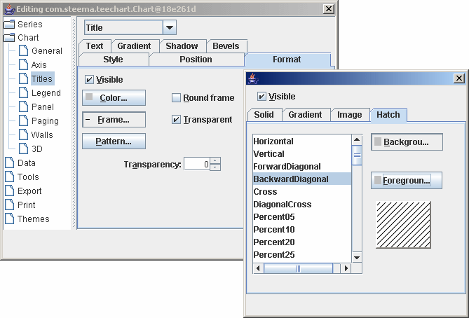
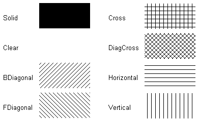
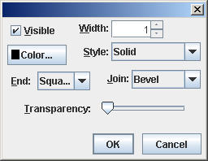

이전 | 다음
|
|
목차 이전 | 다음 |
차트 디스플레이 속성은 차트의 포괄적인 외관에 영향을 줍니다. 이들은 차트의 배경색, 제목과 위치, 여백, 경계, 기울기, 배경 이미지, 프레임, 눈에 보이는 축, 펜 색상과 너비, 3D, 벽면, 기타 등등을 정의하는 속성과 메소드를 포함합니다.
거의 대부분의 이러한 속성들은 설계시이나 실행시에 차트 에디터를 이용하는 것을 통해 가능하며 실행시에 프로그램에 따라서 이러한 속성들을 변경할 수 있습니다..
포괄적인 차트 외관 특성들은 다음과 같은 분류 그룹으로 나눌 수 있습니다:
일반(General)
축(Axis)
제목(Titles)
범례(Legend)
패널(Panel)
페이징(Paging)
벽면(Walls)
3D
이러한 그룹들은 차트 에디터를 열고 차트 페이지를 찾아보면 발견할 수 있습니다. 다른 속성들은 당신이 만드는 차트의 ‘외형’에 영향을 줍니다. 이들은 시리즈 색상과 표식 특성, 개별적인 축이나 그리드 디스플레이 속성과 라벨을 포함합니다. 이들은 이 자습서 후반에서 이러한 기능들의 특화된 기능을 위해 할애된 부분에서 다루게 될 것입니다.
새로운 차트를 폼에 추가하고 나면 회색 패널 배경과 2개의 벽면(바닥과 왼쪽) , 프레임(차트 플로터블 영역의 프레임으로 정의합니다), 차트의 제목 머릿글 "TeeChart"의 기본값을 가진 3D의 모습으로 디스플레이 되는 것을 볼 수 있습니다.
이전 tutorial 1튜토리얼에서 설명되어있는 대로 폼에 'Edit Chart' 버튼을 추가합니다. 프로젝트를 실항하고 버튼을 클릭하여 차트 에디터에 접속합니다. 첫번째 페이지는 시리즈 페이지이고, 이것은 비어있습니다. General 차트 속성 페이지에서 두번째 차트 탭에서 'Genernal'을 선택합니다.
일반 옵션은 인쇄 미리보기와 차트 내보내기(나중에 다루어질 차트 인쇄와 내보내기 부분을 보십시오)는 다음의 세가지 섹션을 포함합니다:
여백 Margins(%)
줌 Zoom
스크롤 Scroll
더많은 스크롤링에 대한 정보에 대하여 줌과 스크롤 튜토리얼(Zoom and Scroll tutorial) 볼수있습니다.
시리즈에 메소드 추가하기 (Series' Add method)여백(Margins)
여백은 차트 경계와 차트 프레임간의 간격을 정의하는 것으로서 포괄적인 차트 패널의 차원의 백분율로 표현되거나 또는 절대 픽셀 값으로 표현됩니다.
차트 에디터의 여백 박스내의 스핀박스를 움직이는 것은 디자인시에 각각의 여백의 변화를 보여줍니다.
실행시에 속성(Runtime methods are):
tChart1.getPanel().setMarginBottom(); tChart1.getPanel().setMarginLeft(); tChart1.getPanel().setMarginRight(); tChart1.getPanel().setMarginTop();

예제는 UpDown버튼을 사용한 데모프로젝트를 적용한것 입니다:
public void jSpinner1_stateChanged(ChangeEvent e) {
tChart1.getPanel().setMarginTop(((Integer)jSpinner1.getValue()).intValue());
}
축의 제어는 복잡성에 있어서 가장 높은 수준을 가진 상당히 특화된 영역이며 나중에 더욱 심도있게 다루어질 것입니다. 축 속성(Axis Control). 여기서는 축과 프레임 디스플레이의 기초적인 것만 다룰 것입니다.
두번째 차트 페이지는 축과 프레임 특성을 정의하는 속성을 보여줍니다.

차트에는 왼쪽, 위쪽, 오른쪽, 아래쪽과 깊이 이렇게 5개의 축이 있습니다. 차트 프레임은 차트의 플로터블 영역에 둘러싸여 디스플레이 되며 데이터에 상응하는 기능들을 가지고 있지 않습니다. (뒷 벽면을 보십시오.) . 깊이는 보이지 않음으로 기본값이 되어있도록 초기화되어 있습니다. 다른 모든 축들은 시리즈가 차트에 추가되어 이들 축들(왼쪽과 아래쪽이 기본값입니다)과 연동되는 순간부터 볼 수 있습니다. 사용자 지정 축은 대화 상자에서 +키와 -키를 이용하여 추가하거나 제거할 수 있습니다. 사용자 지정 축을 볼 수 있게 하기 위해 (다른 축들과 마찬가지로) 시리즈가 반드시 축과 연동되어야 합니다. 사용자 지정 축에 관해 더 자세한 것을 알기 위해서는 Axis tutorial 부분을 보십시오.
축과 프레임을 디스플레이 할 수 있게 해주는 키 속성은 다음과 같습니다:
Visible
이 체크상자는 모든 축의 디스플레이 가능 여부를 결정합니다. 만약 뒷 벽면 프레임이 보이는데 차트를 둘러싸고 있는 것들을 여전히 볼 수 있다면 축들이 감추어지게 됩니다. 그 결과 영역이 없는 상태로 보다 큰 차트의 외관이 축 라벨로 예약될 것입니다. 각각의 축에 있어서 보임 속성은(규모 탭) 각 축의 보임 특성을 오버라이드합니다. 만약 깊이 축을 목록에서 선택한다면 Depth Axis Scales.Visible은 'not visible'으로 기본값이 되어있다는 점을 유념하십시오.
실행시
tChart1.getAxes().setVisible(true);
Axis: Left, Right, Top, Bottom and Depth Visible
특정한 축을 디스플레이 하고자 하거나 또는 숨기고자 한다면 해당 축을 Scales 탭에 있는 목록 상자에서 선택하여 보임 체크박스에 토글을 하십시오.
실행시
e.g.
tChart1.getAxes().getLeft().setVisible(false);
차트 에디터의 제목 페이지는 차트 제목, 머릿글과 바닥글을 특성 짓습니다.

드롭다운 콤보박스를 사용하여 제목(머릿글)이나 부제목, 바닥글이나 부각주 중 하나를 선택하십시오. 텍스트 상자에 필요한 텍스트를 입력하십시오. 제목을 여러 줄로 타이핑할 수도 있습니다.
실행시:
다음은 TChartTitle의 메소드는 TStrings 콤포넌트입니다. Header에 여러개의 선을 추가할수 있습니다:
예제
tChart1.getHeader().setLines(new String[] {"Welcome to", "TeeChart", "for Java"});
텍스트의 라인을 변경할 수도 있습니다:
e.g.
tChart1.getChart().getTitle().setText("Title revised");
스타일 정렬(Style Alignment)
정렬은 포괄적인 차트 패널이 아닌 차트 영역을 중시하는 머릿글(또는 바닥글)정렬을 말합니다. 차트 영역은 차트의 플롯터블 영역이며 또한 축 라벨과 범례를 포함합니다.
실행시:
tChart1.getChart().getTitle().setAlignment(StringAlignment.CENTER);
위치(Position)
위치를 이용하여 제목이나 바닥글 기본값 포지션을 오버라이드 하고 사용자 지정 위치(차트 위쪽, 왼쪽의 픽셀 관련)를 세팅 하십시오.
실행시:
tChart1.getChart().getTitle().setCustomPosition(true); tChart1.getChart().getTitle().setTop(30);
형식(Format)
형식은 제목 상자의 세팅을 포함합니다. 예를 들면 프레임, 배경색 등입니다.
패턴 예시(E.g. Pattern)
Pattern은 제목이나 바닥글 상자의 배경 무늬를 말합니다.
  기본값은 투명입니다. 선택된 패턴은 텍스트 뒤에 놓여질 것입니다. 실행시: 예제
tChart1.getHeader().getBrush().setStyle(HatchStyle.FORWARDDIAGONAL);
텍스트(Text)
텍스트는 제목 상자 외관 형식 특성을 포함합니다.
폰트 예시(E.g. Font)
폰트 버튼은 폰트 대화 상자에서 접근 가능하며, 윈도우 글꼴 선택과 스타일 정의(이탤릭, 볼드체 등등), 색상 선택을 할 수 있게 해 줍니다.
실행시:
tChart1.getFooter().getFont().setName("Times New Roman");
tChart1.getFooter().getFont().setBold(true);
외곽선(Outline)
외곽선은 머릿글이나 바닥글의 텍스트를 위한 프레임을 지칭합니다. 기본값에 의해서 외곽선은 보이지 않음으로 세팅되어 있습니다. 외곽선 옵션은 TChartPen으로부터 유도됩니다.
그라디언트(Gradient)
제목 상자에서 배경 변화를 가능하게 하거나 할 수 없게 하고 그 방향과 색상을 선택합니다.

스타일(Style)
범례 디스플레이를 토글 하거나 하지 않는 것과 범례 디스플레이 내용 특성( 체크 상자 등등을 포함합니다)을 세팅하는 것입니다.
실행시:
체크 상자를 이용하여 범례 디스플레이 하는 것의 예
tChart1.getLegend().setVisible(jCheckBox2.isSelected());
분할선(Dividing Lines)
범례 입력들 사이에 범례 상자 안에 선을 그리는데 사용합니다. TChartPen 속성이 적용됩니다.
실행시:
예제
tChart1.getLegend().getDividingLines().setVisible(true); tChart1.getLegend().getDividingLines().setColor(Color.Blue);
위치(Position)
디스플레이 위치 기본값을 세팅하거나 범례의 사용자 지정 위치를 가능하게 합니다. TChart는 위치한 곳에 맞게 범례의 형태를 바꾸어줄 것입니다. 만약 범례가 차트의 측면(왼쪽으로나 오른쪽)으로 세팅되었다면 범례의 내용은 기본값에 의해서 목록으로써 위쪽으로부터 아래쪽에 나오게 됩니다. 만약 범례가 차트의 아래나 위에 있다면 범례 내용은 나란히 위치하게 됩니다. 이 기본값 반응은 크기조정 차트 옵션을 이용하거나 사용자 지정 위치를 이용하여 오버라이드 될 수 있습니다. 범례의 사용자 지정 위치에 대해서 보다 자세한 내용은
범례 튜토리얼 (Legend tutorial)에 대해 다룬 곳을 보십시오.
ResizeChart 예제(E.g. ResizeChart)
ResizeChart은 페인트 될 때에 범례를 위한 공간이 남을지 남지 않을지를 정의합니다. 이것은 범례가 차트 영역 안에 위치될 수 있도록 해 줍니다.
실행시:
예제
tChart1.getLegend().setResizeChart(true);
%Top position
범례 상자를 차트 패널의 상단(위쪽)으로부터 자리를 바꾸도록 정의합니다. .
실행시:
예제
tChart1.getLegend().setTopLeftPos(20);
기호(Symbols)
범례 기호의 크기와 형식입니다.
%Color width
범례 안에 있는 색상 상자의 너비를 정의합니다.
실행시:
예제
tChart1.getLegend().setColorWidth(40);
형식(Format)
타이틀 박스로 세팅을 포함합니다. 예) Frame, 백그라운드 칼라 등..
쉐도우(shadow)
범례 상자의 음영을 디스플레이 하기 위한 속성입니다. 색상과 크기를 정의할 수 있습니다.
실행시:
e.g.
tChart1.getLegend().getShadow().setColor(Color.Yellow);
텍스트(Text)
범례 텍스트 내용을 위한 텍스트 특성입니다.
실행시:
tChart1.getLegend().setColor(Color.blue);
tChart1.getLegend().getFont().setName("Times New Roman");
tChart1.getLegend().getFont().setColor(Color.yellow);
그라디언트(Gradient)
TeeChart 패널 페이지는 차트의 외관을 급진적으로 향상시키는 매개 변수를 세팅할 수 있게 해 줍니다. 패널 변화 효과는 트루 칼라를 지원하는 모니터에 의해 최적으로 보이지만 몇몇 255 색상 스크린에서의 색조합도 매우 훌륭합니다.
이제 TeeChart 속성에 대해 익숙해졌으므로 여기서는 모든 속성들을 다루지는 않을 것입니다. 패널 속성과 메소드는 패널 인터페이스를 통해 액세스 할 수 있습니다:

키 영역은 다음과 같습니다:
배경(Background)
Panel Color 예제
패널 색상은 선택한 색상으로 차트의 전체 배경을 페인트 할 것입니다. 만약 배경 변화나 배경 이미지 보기를 선택한다면 이것은 패널 색상을 숨깁니다. 만약 배경 색상을 세팅 한다면 차트 프레임 안에서만 패널 색상이 바뀔 것입니다.
BackImage 예제
배경 이미지로 비트맵 (.bmp) 파일을 선택할 수 있습니다. 배경 이미지는 차트 패널에서 가운데에 위치하거나 바둑판식으로, 혹은 늘여질 수 있으며, 또는 차트 프레임 경계에 의해 제한될 수 있습니다.
실행시:
실행시에 BackImage.LoadFromFile 를 이용하여 배경이미지를 차트에 추가합니다.
예
if (jFileChooser1.accept(jFileChooser1.getSelectedFile())) tChart1.getBackgroundImage().loadFromFile(jFileChooser1.getSelectedFile());
경계(Border)
경계는 독립적으로나 또는 기울기 속성과 결합되어 정의할 수 있습니다. Visible을 True로 세팅한 경계는 차트 패널 바깥에서 "가라앉은" 경계 효과를 얻을 수 있을 것입니다. 기울기와 경계를 혼합하고 너비를 조정하면 거의 모든 3D 효과의 조합을 얻을 수 있습니다.
Bevel Inner/Bevel Outer/Width 예제
이들 속성은 차트 패널의 경계에서 다양한 3D 효과를 얻게 해 줍니다. 이들을 디자인시에 조정하면 경계 기울기에 어떤 영향을 주는가를 볼 수 있습니다.
그라디언트(Gradient)
그라디언트를 정의하기 위해서는 반드시 StartColor과 EndColor (선택적으로 MidColor)를 설정하고 그리고 Gradient의 Visible처럼 활성화합니다. Gradient는 차트 패널 전체에 적용될 것입니다. Gradient direction은 StartColor, MidColor, 그리고 EndColor 사이의 색상 변화의 방향을 정의합니다.
실행시:
예제
tChart1.getPanel().getGradient().setStartColor(Color.Teal); tChart1.getPanel().getGradient().setEndColor(Color.SkyBlue); tChart1.getPanel().getGradient().setDirection(LinearGradientMode.HORIZONTAL); tChart1.getPanel().getGradient().setVisible(true);
TeeChart 페이징은 차트가 페이지마다 지정해 놓은 수의 포인트들로 나누어 지도록 해 주며 또 차트의 페이지가 넘어가게 해 줍니다. 보다 자세한 정보를 원하시면 페이지 관련 자습서를 보십시오.

벽면속성은 다음속성을 통해 엑세스 할수 있습니다.:
tChart1.getPanel().getGradient().setStartColor(Color.Teal); tChart1.getPanel().getGradient().setEndColor(Color.SkyBlue); tChart1.getPanel().getGradient().setDirection(LinearGradientMode.HORIZONTAL); tChart1.getPanel().getGradient().setVisible(true);

벽면 경계(Wall Border)
경계 버튼은 TchartWalls 콤포넌트를 통하여 펜 정의를 할 수 있게 해 줍니다. 이것은 다른 많은 TeeChart 개체들을 가능하게 해 주는 것과 같은 펜입니다.

이 visible 속성은 경계의 보임과 숨김을 설정합니다. 축이 보임으로 되어 있는 곳에서 BackWall의 경우, Wall Border는 이들 축 뒤로 감추어져 만약 당신이 몇몇, 또는 모든 축들을 감춘다면(예를들어 벽면경계의 생상변경의 결과를 보기위해 위쪽과 오른쪽의 축들이 보이지 않도록 만드는 것, 예시:Chart1.BackWall.Pen.Visible := True;) 오직 경계가 가능한지 또는 불가능한지의 결과만을 볼 수 있습니다.
경계 펜의 다른 특성들을 알기 위해서는 ChartPen을 보십시오. 디자인시에 이 속성들을 바꿀 수 있습니다.
3D is extremely flexible in TeeChart Pro. You have the option to display the Chart as:
| 2D | 앞면에서 보는 관점의 평면 차트 |
| 3D Orthogonal | 깊이를 지시하는 벡터 선으로 나타나는3D |
| 3D Native Windows | 3D 캔바스를 이용하여 180도 차트를 회전시킨 3D |
| 3D Open GL | Open GL 캔바스를 이용하여 360도 차트를 회전시킨 3D |

에디터 옵션(Editor options):
3차원(3 Dimensions)
이 속성(토글링)을 선택하면 설계시에 차트를 3D에서 2D 차트로 바꿀 수 있으며 세팅은 실행시에 효력을 나타냅니다.
3D %
3D 효과의 깊이를 제어합니다. 이 속성의 값을 바꾸면 디자인타임에 3D 백분율을 바꾸는 효과를 보여줍니다.
실행 방법은:
3D visible
tChart1.getGraphics3D().getAspect().setView3D(true);
3D%
tChart1.getGraphics3D().getAspect().setChart3DPercent();
직각 옵션이 불가능으로 되어 있을 때, Windows Native 3D 모드를 가능하게 하면 차트를 회전시키거나 높이거나 또는 오프셋을 할 수 있습니다. 줌 옵션은 차트 전체를 앞으로 당겨주거나 뒤로 물러가게 해 줍니다. 데이터 시리즈에 있는 차트 내부적으로 줌은 실행시에도 가능합니다.
 |
 |